2016-12-01 - Nº 83

Editorial
Esta é a Newsletter Nº 83 que se apresenta com o mesmo formato que as anteriores. Se gostar da Newsletter partilhe-a!
Todas as Newsletters encontram-se indexadas no link.
Esta Newsletter tem os seguintes tópicos:
Faz hoje anos que nasceu Clarence Zener. Este físico norte-americano nasceu em 1905 e foi o primeiro a descrever a propriedade da separação dos isoladores eléctricos. Estes estudos conduziram mais tarde à criação de um Diodo que ficou designado por Diodo Zener. Também faz hoje anos que nascia Martin Heinrich Klaproth. Este químico alemão nascido em 1743, ficou conhecido por ter descoberto o elemento urânio, o zircónio e o cério. Esta semana a Intel apresentou a sua estratégia para a "Smart Home" ou casa Inteligente. O cargueiro Soyuz-U lançado a partir do BAIKONUR Space Center explodiu ao fim de 382 segundos de voo. Este cargueiro sem tripulação ia fazer uma entrega de mantimentos à ISS. Uma equipa de cientistas designada por PartTimeScientists estão a preparar uma viagem à Lua para revisitar o local onde aterrou a Apollo 17 em 1972. A startup Comma.ai do hacker Geohot disponibilizou em open-source o seu software de condução autónoma.
Na Newsletter desta semana apresentamos diversos projetos de maker assim como alguns modelos 3D que poderão ser úteis. Saíram as revistas Newselectronic de 21 e 22 de Novembro.
 João Alves ([email protected])
João Alves ([email protected])
O conteúdo da Newsletter encontra-se sob a licença  Creative Commons Attribution-NonCommercial-ShareAlike 4.0 International License.
Creative Commons Attribution-NonCommercial-ShareAlike 4.0 International License.
Novidades da Semana ^
Getting Across the Smart Home Threshold
"Smart home is a term that is likely well known by anyone who follows technology as closely as I do, and even people who don’t. But do people really understand what a smart home is today versus what it could be in the future? In my position as corporate vice president of the Connected Home and Commercial Client Group at Intel, I lead Intel’s smart home strategy. My colleagues and I see innumerable opportunities to innovate and create solutions that can enrich our lives in the homes, neighborhoods and communities we all share. The Internet of Things (IoT), edge analytics platforms, home connectivity and personal computing devices all play a role, and we can create amazing experiences when we collaborate." [...]

Roscosmos. Progress Ms-04 Situation
"Soyuz-U launch vehicle (LV) with cargo spacecraft Progress MS-04 was launched from the BAIKONUR Space Center. The LV flight was normal until 382-d seconds. After 382 seconds of flight the receiving Progress MS-04 telemetry data was stopped. Radar stations did not detect the cargo vehicle Progress MS-04 on the calculated orbit. According to preliminary information, the contingency took place at an altitude of about 190 km over remote and unpopulated mountainous area of the Republic of Tyva. The most of cargo spacecraft fragments burned in the dense atmosphere. The State Commission is conducting analysis of the current contingency. The loss of the cargo ship will not affect the normal operations of the ISS and the life of the station crew." [...]
Private Moon Rovers May Visit The Apollo 17 Landing Site
"The Apollo 17 landing site has been abandoned since the last lunar astronauts went home in 1972. Now the site could get its first visitor in 44 years, as private companies race to the moon in the Google Lunar Xprize competition. A German team known as the PartTimeScientists plans to send its rovers to the Apollo 17 landing site and examine the moon buggy left behind by astronauts Gene Cernan and Harrison Schmitt. PartTimeScientists is the fourth team to book a flight to the moon. A rocket rideshare company called Spaceflight Inc. is handling the launch contract. Exactly which rocket it will ride on (and when) is still up in the air." [...]
Geohot's startup Comma.ai open sources its self-driving software
"George Hotz became well-known for being the first to come up with an iPhone jailbreak and reverse-engineering the PlayStation 3 gaming console — which led to a widely publicized legal battle with Sony. Capitalizing on his fame, he turned his attention to more ambitious endeavors, building his own aftermarket device to give any relatively modern car advanced autopilot features. The device, dubbed Comma One, was set to retail at $999 and included front radar sensors and a camera. But after the National Highway Traffic Safety Administration (NHTSA) sent Hotz a letter in October asking him to detail how the product works and the steps taken by the company for safety compliance, the project came to an abrupt end. Hotz claimed he would much rather spend his life building amazing tech than dealing with regulators and lawyers, and that Comma.ai would look to other products and markets." [...]
Outras Notícias
- Amazon Lex – Build Conversational Voice & Text Interfaces
- In the Works – Amazon EC2 Elastic GPUs
- Amazon Rekognition – Image Detection and Recognition Powered by Deep Learning
- DARPA Creating Industry/Government Group for Safe Operation of Space Robotics
Ciência e Tecnologia ^
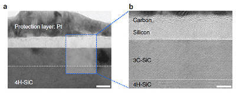
Making Graphene Using Laser-induced Phase Separation
"All our smart phones have shiny flat AMOLED displays. Behind each single pixel of these displays hide at least two silicon transistors which were mass-manufactured using laser annealing technologies. While the traditional methods to make them uses temperatures above 1,000°C, the laser technique reaches the same results at low temperatures even on plastic substrates (melting temperature below 300°C). Interestingly, a similar procedure can be used to generate crystals of graphene. Graphene is a strong and thin nano-material made of carbon, its electric and heat-conductive properties have attracted the attention of scientists worldwide. Prof. KEON Jae Lee's research group at the Center for Multidimensional Carbon Materials within the Institute for Basic Science (IBS) and Prof. CHOI Sung-Yool's team at KAIST discovered graphene synthesis mechanism using laser-induced solid-state phase separation of single-crystal silicon carbide (SiC). This study, available on Nature Communications, clarifies how this laser technology can separate a complex compound (SiC) into its ultrathin elements of carbon and silicon." [...]
‘Diamond-age’ of power generation as nuclear batteries developed
"New technology has been developed that uses nuclear waste to generate electricity in a nuclear-powered battery. A team of physicists and chemists from the University of Bristol have grown a man-made diamond that, when placed in a radioactive field, is able to generate a small electrical current. The development could solve some of the problems of nuclear waste, clean electricity generation and battery life. This innovative method for radioactive energy was presented at the Cabot Institute’s sold-out annual lecture - ‘Ideas to change the world’- on Friday, 25 November. Unlike the majority of electricity-generation technologies, which use energy to move a magnet through a coil of wire to generate a current, the man-made diamond is able to produce a charge simply by being placed in close proximity to a radioactive source." [...]
Modelos 3D ^
Com a disponibilidade de ferramentas que permitem dar azo a nossa imaginação na criação de peças 3D e espaços como o thingiverse para as publicar, esta rubrica apresenta alguns modelos selecionados que poderão ser úteis.
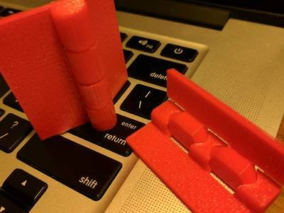
Customizable Hinge v2
"A complete rewrite of my customizable hinge! The new version is immensely more printable and quite possibly over parameterized. No longer do you need to break it free, as long as the hinge gap parameter is set to something your printer can handle it should hinge easily right off of the bed! Major changes from the old version include using angled interfaces between the hinge points instead of a solid pin to provide improved printability and much more flexibility for the screw holes." [...]
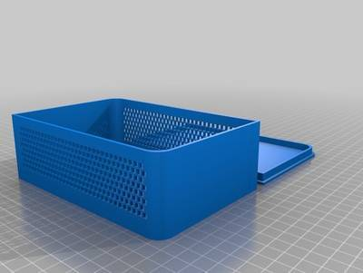
Parametric Enclosure with Lid
"I was learning OpenSCAD and wanted to make an enclosure for an electronics project. Rather than create a box each time I thought it would make more sense to have a "library" file which could create the box I needed and be re-usable. This box could also be printed as-is to hold nearly anything. It will make a square-edged box, one with radiused corners, or a stylized version with two rounded and two squared corners opposing. It will optionally create vent holes; either round holes or square. A note about the $fn=200; parameter. This will greatly smooth all radiused surfaces. It will also kill your processor. My poor i7-4800MQ takes about 30 minutes to render the circular holed option when this is enabled. I highly suggest you leave it commented until you are ready to export your final .STL. Final thought: This renders properly but does not seem to like to preview. I've seen this a lot. If anyone knows why that is; I'm all ears." [...]
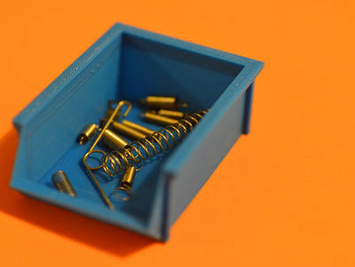
Customizable Simple Part Bin
"Customize your own part bin whether its for that load of loose screws you keep around 'just in case' or tiny electronic components they will no longer go missing. This box is made for the ultimate plastic scrimper and all the walls can be paper thin as the box will still be supported by columns (however I would still recommend 2 layers). Easy to print with no overhangs over 45o and box can be stacked several high if they are the same dimensions. Make it you own and any size NOW!" [...]
Documentação ^
A documentação é parte essencial do processo de aprendizagem e a Internet além de artigos interessantes de explorar também tem alguma documentação em formato PDF interessante de ler. Todos os links aqui apresentados são para conteúdo disponibilizado livremente pelo editor do livro.
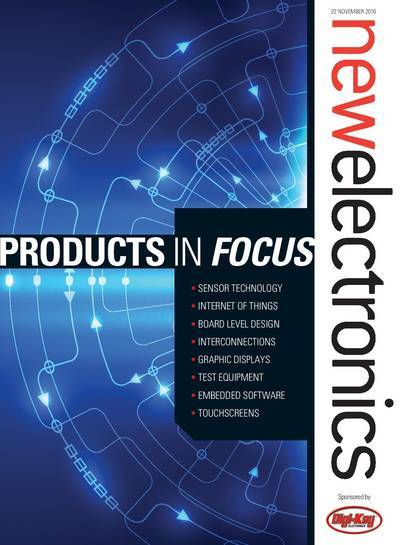
newelectronics - 21 November 2016
"New Electronics is a fortnightly magazine focusing on technological innovation, news and the latest developments in the electronics sector. Downloadable as a digital page turner or pdf file, or offered as a hard copy, the New Electronics magazine is available in a format to suit you." [...]
newelectronics - 22 November 2016
"New Electronics is a fortnightly magazine focusing on technological innovation, news and the latest developments in the electronics sector. Downloadable as a digital page turner or pdf file, or offered as a hard copy, the New Electronics magazine is available in a format to suit you." [...]
Projetos Maker ^
Diversos Projetos interessantes.
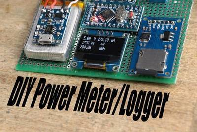
Make Your Own Power Meter/Logger
"In this project I will show you how I combined an Arduino, an INA219 power monitor IC, an OLED LCD and a Micro SD Card PCB in order to create a power meter/logger that has more functions than the popular USB Power Meter. Let's get started!" [...]
How to make an Automatic Night Light
"Automatic night light is a device with turns on light when there is darkness in the surrounding. Its a portable version of automatic street lights. In this I used LDR (Light Dependent Resistor) which varies resistance with respect to light intensity." [...]
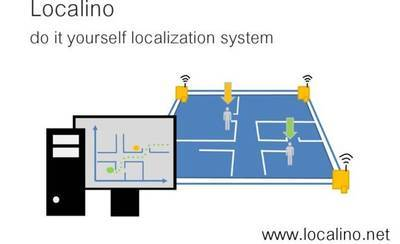
Localino: Open Source Indoor Location System (Arduino + Decawave)
"This instructable explains how to build an indoor location system with centimeter accuracy for <$ 200 using ultra wideband. do it yourself. Most indoor location systems make use of wifi, bluetooth, wifi fingerprinting etc and show accuracies within several meters. Ultra wideband systems offer high accuracy (cm range), due to wide signal bandwidth. However, these UWB systems are very expensive, so for a setup where you want to localize something in your project (for example maneuver your lawnmower) you can easily spend > $1000 or more. We decided to make a universal PCB that can be used as tag or anchor with or without wifi interface and an UWB ranging transceiver. With these diy-kits you can setup an indoor location system consisting for 3 anchors + 1 tag for around $200! And its even less, if you just want to measure the proximity to something... (1 anchor + 1 tag)." [...]
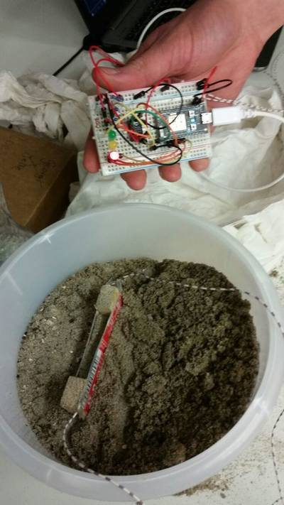
Capacative Soil Moisture Sensor (self-made)
"This instructable describes how you can build your own soil moisture sensor. There are a lot of instructables online about soil moisture sensors, but not that much about a self-made capacitor for measuring soil moisture content. With the simple resistance measuring, the biggest issue is the corrosion of the metal sensor, not just because it contacts the wet soil, but also because of the electric current which causes electrolysis of the sensor. Feeding the sensor with an AC or a pulsating DC may fix this problem for a little, but we prefer to make a capacitor as a soil moisture sensor. There are some advantages to a capacitor. You avoid corrosion , but capacitive measuring also gives a better reading of the moisture content of the soil in comparison with the resistance measurement. The electrical conductivity of the soil is increased by salts, so fertilizers added to the ground may result in incorrect readings. The capacitor that we build will measure the time that is necessary to charge the sensor. The charging time will increase if either the resistance or the capacity increases. The resistance is constant and the capacitance increases if there is water between(or around) the sensor, because the relative permittivity of the dielectric material increases." [...]
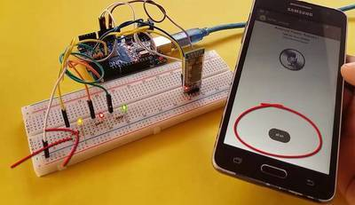
Arduino Control With Android Voice Command (via Bluetooth)
"We will provide Arduino communication via bluetooth with the previously defined sentence commands in the Android application. You can use this project in home automation systems." [...]
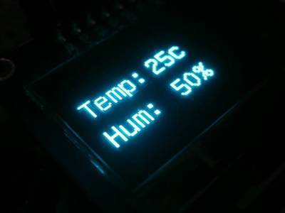
Arduino OLED Thermometer And Hygrometer With DHT11
"Hello ! I'm going to show you how to make an Arduino OLED thermometer and hygrometer* with DHT11. The OLED we will use today is 1.3" inch in size, features 128x64 pixels and uses the SPI Bus. On the next step you will find more useful information about the OLED tech and this display. We will use the u8glib library to communicate with our display. This library has many available parameters with it you can display numbers, letters, bitmaps and other symbols on OLEDs and graphic LCDs also it works for E-ink displays." [...]
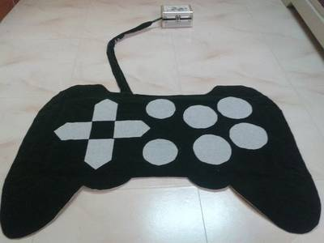
Full function Wireless joystick Rug for PC - No stitch
"Play PC games bored now a days. So Lot of virtual reality objects come to interact with PC to play games, but its more expansible. So I plan some thing cheap to interact with PC. First of all i like to did it for my child. While web surfing i found a musical drums app which able to play with Key board. So with that in mind and also for PC games i plan to did a wireless carpet used as joystick to play games and run applications by foot. Again all must be cheap. But it consume lot of days to complete this project. It also consumes more gum almost 0.75 Kgs of gum. Due to multiple layer its very soft to stand. After complete this project my child is very happy on play in this rug. I also feel very happy to do this." [...]
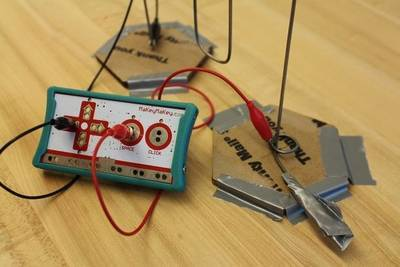
Make a MakeyMakey Wire Maze
"Here at the MakerSpace, the MakeyMakey is one of our favorite tools to play with electricity and electronics: it's fun, it's versatile, and the projects you build with it can be as simple or as complex as you need them to be - everything a Maker could want! In this Instructable, we will show you how to make a quick wire maze game out of everyday items - let's go to the next step for a complete list of tools and materials!" [...]
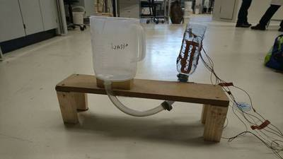
Magnetic Depth Meter
"In this instructable we’re going to show you how to build you own magnetic water depth meter. Our depth meter works with the concept of communicating vessels. The sensors are attached to a vessel that is connected to the water body that you want to measure, in this case a measuring beker. The vessel with the sensors will have a floating magnet in it, which will float with the water level, allowing you to measure it quite precisely. With the following steps we hope that it will be clear for you how to make this sensor." [...]
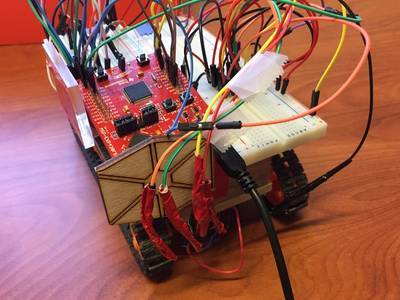
Line Follower Robot
"The line follower, and collision detection robot was developed as part of a school project and was constructed to complete a path designated with a black line and stop before objects. This robot is a fun way to get started with working with embedded systems! It is a fairly simple program and circuit to construct, but it allows one to learn a great deal about electronics. The robot has various components and sensors that allow the robot to function properly. These include the Texas Instruments MSP430 F5529 LaunchPad, photoresistors, an infrared proximity sensor, an h-bridge, and two motors. Don't worry if you do not know what each of these are because it will be explained more." [...]
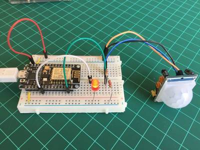
IoT Motion Detector With NodeMCU and BLYNK
"This is a very simple tutorial to show how ease is to implement an IoT project with NodeMCU and Blynk. Any time that we a movement is detected by the sensor, a message provide by Blynk is send to a smartphone." [...]
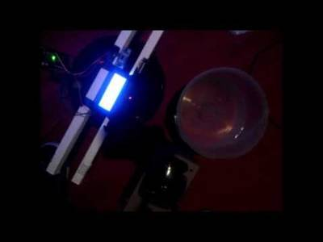
Arduino - LCD 20x4 Water LEVEL MONITOR HC SR04
"Hello world! Today i made a Water Level Monitor with arduino and the HC-SR04. It is a pretty basic example on what you can do with the HC-SR04 Ultrasonic Sensor and shows you the centimeters that are left to fill the Water Tank. You can simply change the code and put if statements for certain values to trigger actions when the Water Tank is running out of water, like filling it and stop filling it automatically with a solenoid valve for example by using a relay. Follow the next step for the code Schematic & parts list." [...]
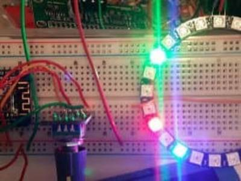
ESP8266 Neopixel Ring Clock
"So, I bought a 24 LED Neopixel Ring and was trying to decide what to do with it. I had originally planned on using the ring for a Cheerlights project but after making a Cheerlight out of it I decided this was a terrible waste of the ring. So, one weekend when visiting my local Makerspace (Medway Makers in the UK) I decided I would make a clock out of it. The ESP8266 is ideal for this as has wifi so the time can be obtained over NTP and it can also control the Neopixel Ring. I use the Wemos D1 Mini as they are very simple to use, have a micro-USB connection for power and data, cost only a few bucks and can be used very easily with the Arduino IDE. This is a very simple project with simple code and not much in the way of a circuit." [...]
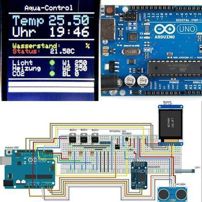
Aquarium Controller
"This Instructable will show you how to make a Aquarium Controller. First of all: I'm not an engineer and I'm not a programmer. There may be errors, so please ask if there are any ambiguities. We do not want to make a fishcooker :) I hope you have some fun und enjoy this project. Ok, now some background: I have 4 aquariums and needed a lot of time switches for the light, because I use daylight, zwilight, nightlight or spotlight. Than I need time switches for CO2-solenoid valves (CO2-switches?) and some sockets for some heater. A lot switches, a lot sockets, a lot of money you need. It would be much easier if an Arduino could do that all. I thought a little: I do not want high voltage on my controller, because I'm not a professional. I want all in one and I want to see how it works. That´s all ;)" [...]
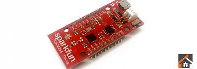
How to Run Your ESP8266 for Years on a Battery
"For most of the projects I am building with the ESP8266 WiFi chip, I usually don’t care too much about the power consumption aspect. I for example build data loggers that are constantly connected to the mains electricity, and appliances controller which also have an easy access to power. However, in some cases, we want to build projects that are only powered by batteries. This is for example the case for a motion sensor that you will install in your home, or a data logger you would put in a remote location. For those cases, you don’t want to be changing the batteries constantly. For example, an ESP8266 chip with a standard 2500mAh LiPo battery would last for about 30 hours. Not good enough. That’s why in this article, I will show you how to significantly reduce the power consumption of your ESP8266 boards using the deep sleep mode of the chip, so you can build projects that will last for years on a single battery. Let’s dive in!" [...]
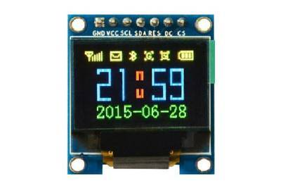
Best Arduino Display
"A good display can make your Arduino project to shine. In this article I am going to show you the Best Arduino Display for your projects. I have tried many displays. From the most inexpensive ones, to the most expensive ones. That’s why I can help you choose the best Arduino Display for your project. This comprehensive, user frienly guide aims to assist you in choosing the best Arduino display for you." [...]
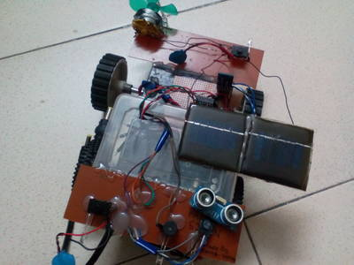
Simple bluetooth car with ultrasonic parking siren
"I have made a simple bluetooth car along with it i have made ultrasonic parking sensor." [...]
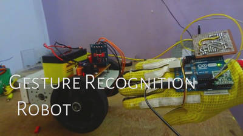
Hand Gesture Controlled Robot
"I wish I could control everything with my hands! Sitting in my chair and controlling things like a BOSS. I'd love it! So I finally came out with a cool DIY hand gesture recognition robot, which can follow the commands made by hand gestures. Sounds crazy but I promise it’s very simple. Making a gesture control robot is actually very simple. This robot is a improvement of my another DIY project RC car using RF module. Here too, the robot is divided into two parts, transmitter and receiver. The receiver circuit is the same as that of the old post and there is only a slight change in the transmitter circuit, here we need to program the transmitter circuit. So I will be using an Arduino as the programming platform. To recognize the gestures made I will be using an accelerometer sensor. So let’s get building!" [...]
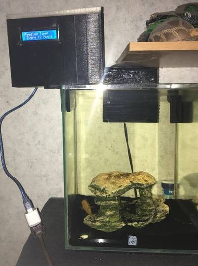
Arduino Automatic Fish Feeder
"This instructable was created in fulfillment of the project requirement of the Makecourse at the University of South Florida (www.makecourse.com) This instructable is going to explain how to build an Arduino powered Automoatic Fish Feeder." [...]
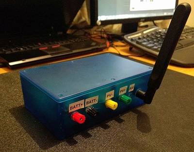
Robust Remote Solar Monitoring
"This is a project for a real-world prototype that I’ve developed for a charitable organisation to try and help them. The charity helps people in the poorest parts of the world with clean water and solar electricity. The prototype is of an end-to-end remote monitoring solution for their deployments so I'd class it as intermediate-advanced (but with enough Googling, I think even a beginner could do it :))." [...]
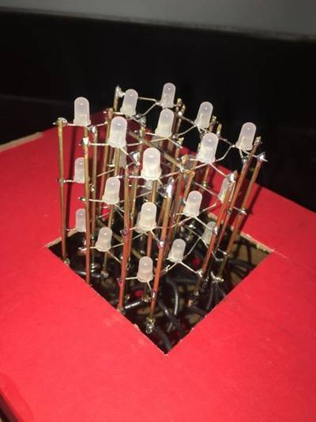
3x3x3 RGB LED Cube
"Music is purely audible, but some people respond better to both visual and audible cues. How can we make music more visually interactive to the listener? Using LEDs we can create a 3-Dimensional visualizer. This makes music more accessible to those who may not be able to hear music, but with this they could be able to visually connect to music." [...]
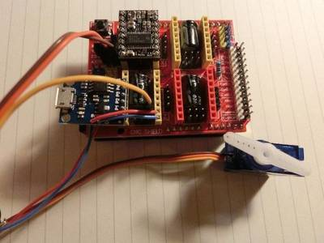
DRV8825 compatible servo control with Digispark Arduino
"This project is intended to provide a simple solution for using servos with CNC and plotter projects based on GRBL Arduino firmware (and CNC shield). Of course it is possible to use a modified GRBL firmware and drive the servo directly from the main Arduino. However, this requires specialized firmware and often specific Gcode instructions. This project strives to use a Digispark (Attiny85) to imitate the DRV8825 stepper drivers to control the servo. This way you can use generic Gcode and the Digispark takes care of converting the Z axis commands to servo movement. My goal was to make this as simple as possible so anyone can do it. It would also work on other axes, but placement of the module might become less trivial and my main focus was the Z axis (as for 2.5D plotter like movement)." [...]
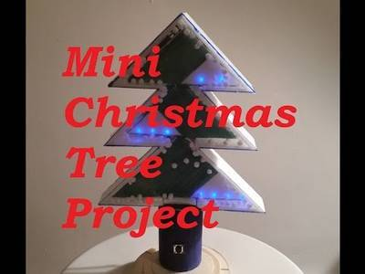
Mini Christmas Tree with LEDs and Sound
"So this year I thought to create a 3D model of it, with a bit of sound, adding an ISD1820. It goes just for 10sec, which is more than enough to bother my guests :-)" [...]
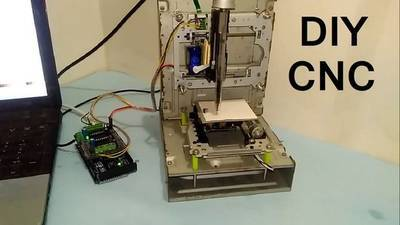
How to Make Arduino Based Mini CNC Plotter Using DVD Drive
"this a mini CNC 2D plotter made from old DVD drive and L293D motor shield very cheap but intresting. let see how to make. It is very easy to make all the step by step procedure is mention in this instructable" [...]
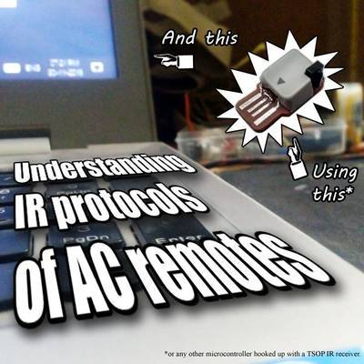
Understanding IR protocol of Air Conditoner's remotes
"I've been learning about IR protocols for quite some time now. How to send and receive IR signals. At this point, the only thing remaining is the IR protocol of AC remotes. Unlike traditional remotes of nearly all electronics devices (say a TV) where only one button's information is sent at the time, In AC remotes all of the parameters are encoded and sent at once. Hence, It can be a little bit tricky to decode the signal from a microcontroller. In this instructable, I'll Explain how we can easily decode IR protocols of any AC remote. I'll be using my HID IR KEYBOARD to read and decode the IR signals by writing a new program. but you can use nearly any microcontroller you're familiar with as long as it supports External interrupts coupled with a TSOP IR demodulator." [...]
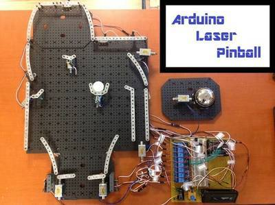
Arduino Laser Pinball
"This project uses laser tripwires, solenoids, and erector set parts to build an Arduino controlled pinball machine. Solenoids are used to power flippers that propel the ball around the playfield. Targets consist of “baskets” that hold the ball. Once the ball comes to rest in a target, a laser tripwire automatically triggers a solenoid to eject the ball, putting it back in play. A bell is sounded when the ball is ejected from a target." [...]
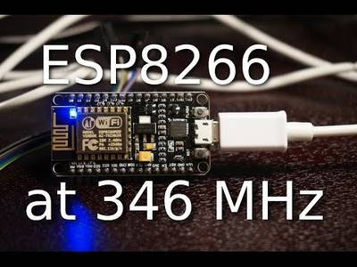
nosdk8266 - Trying to make ESP8266 projects without a big SDK
"There is an awesome little $2 processor called an "ESP8266." It's the definitive chip that is bringing the internet of things to life. Ever wonder what the ESP8266 can do without wifi? Well, this project is it! No longer shackled by an SDK that takes up 200 kB of flash, and tons of RAM, you're free to experiment and do so quickly. Little did we realize how limited the clocks were and just how fast this chip can be once unleashed. This is a working ESP8266/ESP8285 minimial, non-SDK application. It can optionally use the ROM functions to deal with I/O, interrupts, printf'ing, etc." [...]
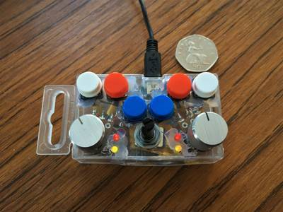
Very Small Arduino DJ Controller
"The plan was to build a very cheap and portable DJ Controller. The result - three potentiometers, six push buttons and four LED's which are all user configurable." [...]
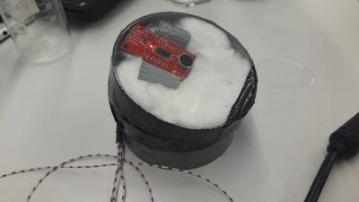
Audio Sensor to Measure Rain Intensity
"For an assignment for the TU Delft we (Irene and Philippine) have made an audio sensor that measures rain intensity. This is also known as a disdrometer." [...]
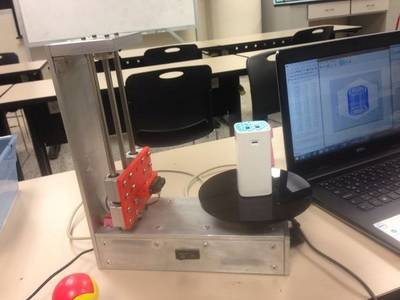
DO YOUR OWN SCANNER 3D
"The purpose of this project was to make a scanner: 1. That can scan pieces with maximun dimensions of 25cm in height and 10cm in width. 2. Cost-friendly 3. With the detail list of all materials used. The end result was very successfull and hopefully this instructable will help more people try it and have fun while learning." [...]
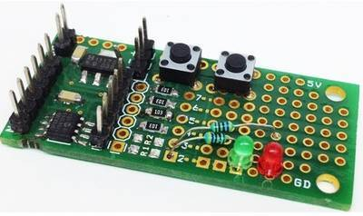
8 PIN PIC Development Board – PIC12F683
"8 PIN SMD PIC development board is a full-featured development board and platform for 8-bit PIC® microcontrollers. This project is a versatile development solution, featuring several options for external sensors, off-board communication and human interface. Additionally, it offers ample room for expansion, making it an excellent solution for developers and engineers looking for a PIC development board. The 8 Pin SO8-SMD PIC Development / Evaluations Board demonstrates the capabilities of Microchip’s 8-bit microcontrollers, specifically, It can be used as a standalone demonstration board with a programmed part. With this board you can develop and prototype with all Microchip’s 8 PIN PIC microcontrollers which doesn’t required crystals (External Oscillator). On board connector for ICSP allows an easy programming. The board has configurable pull ups on all pins can be soldered or abandon as per requirement, All pins has solder Jumpers for pull down. Onboard 5V regulator, two tact switch, one output connector to interface with 12V Relay board or solid state AC or DC Relay. Board has small prototype area. We have considered PIC12F683 IC for this Board." [...]
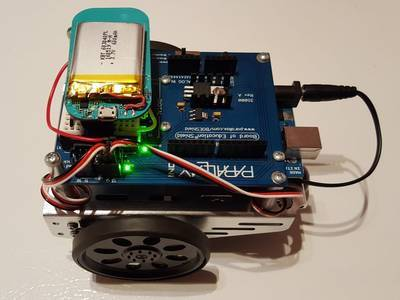
Web controlled BoE-Shield Robot with the LightBlue Bean
"Have you ever wanted to control a robot from a web browser? Use the LightBlue Bean[+] (LBB[+]) to control a BoE-Shield Robot using BLE." [...]
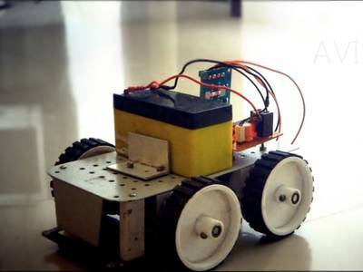
DIY REMOTE CONTROL CAR: THE BEST RC CAR TUTORIAL
"Remote control cars have been the dream the toy for most kids. And you can never outgrow them! In this post, I will show you step by step, how to make a simple Remote Control Car that operates in RF (radio frequency). This is a very simple and beginner level robotic project which can be made by anyone with interest. I will be discussing on the working of all integrated circuits (IC) and modules used in this robot. And there is no programming required for making this robot!" [...]
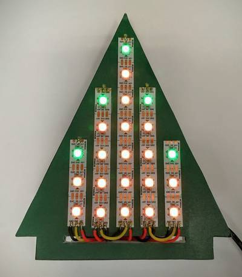
LED Holiday Tree With Shared Internet Control
"This project is an ESP8266 powered LED holiday tree. It will run some nice holiday colors if there is no network configured, but if you do configure the WiFi, the colors will be shared live with everyone who makes one! This is an extension of TeleToyland, where you can interact with shared robots on the Internet. For this project, the control is shared, but the installation is all over the World! When someone chooses new colors for the tree, all the tress will update in real time." [...]
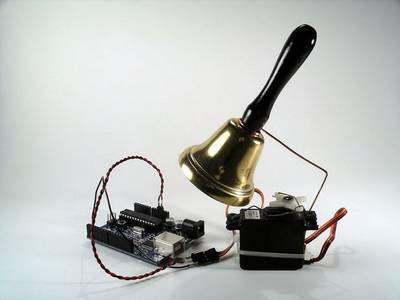
Arduino XMAS hitcounter
"Christmas is coming closer, so here is my contribution to put you in the right mood. It is a blog hitcounter, that rings a bell. Literally. It puts a smile on your face, every time someone hits your blog. It consists of an Arduino board, a bell, a servo and a couple of lines of code in c, python and php. Most parts are fairly common and should be easy to get." [...]
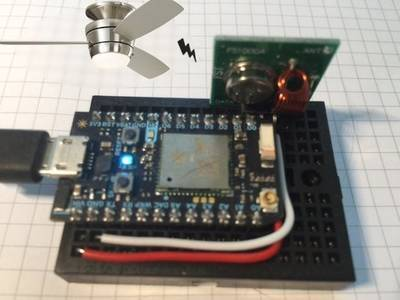
Voice Control of a Ceiling Fan with Alexa
"In this Instructables, we will use a Particle Photon (Arduino compatible) microcontroller coupled with a 315MHz RF Transmitter to send commands to a Harbor Breeze ceiling fan. We will then learn how to use an Amazon Echo and Alexa to activate our fan using voice commands. The ultimate goal is to be able to turn on the fan by saying: "Alexa, trigger fan on"." [...]
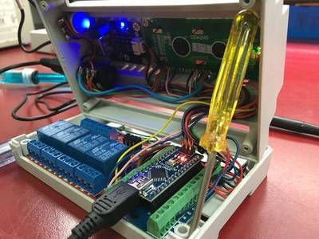
Aquariumatic v1: Arduino powered Multi-Aquarium Monitor
"With an Arduino Nano at its heart, this DIN rail mountable control box can monitor and help maintain the environment required for your fish to thrive. With sensors to monitor pH levels and temperature, and relays to control heaters, lights and pumps this little box can work to keep conditions within preset thresholds. The device can output data and alerts via serial over the USB port or i2c giving huge options to expand the system; I have mine connected to Python webserver running on a Raspberry Pi to give a user friendly Web based interface to monitor and control the tank. Multiple Aquariumatic V1 units can be connected to the raspberry Pi via i2c to allow Multi-Aquarium control all from the same Web interface!" [...]
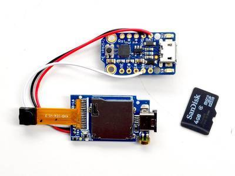
Timelapse Spy Camera
"Here's a quick guide on how to use the Mini Spy Camera to make timelapses and control from a microcontroller like a Trinket." [...]
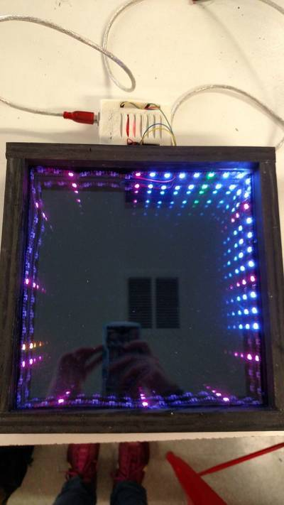
Square Infinity Mirror Clock
"This project combines an infinity mirror and a strip of neopixels programmed to perform as a clock." [...]
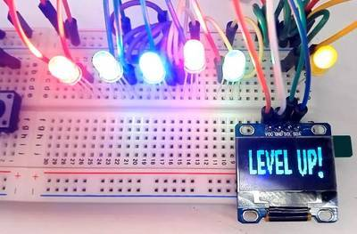
Advanced Simon Says
"This instructables shows "Advanced Simon Says". There is the reason why I put 'Advance' to 'Simon Says'. All of you may know what Simon Says and easy to find it with arduino project. (Actually, I did not.. first I named it 'Memory game'..) It has Level up and Life system. If you get a high score, it will show level up and the LED speed will be faster. Also, if you has wrong answers three times, life will be gone and the game finished. For now, Lets Start how it works in technically." [...]
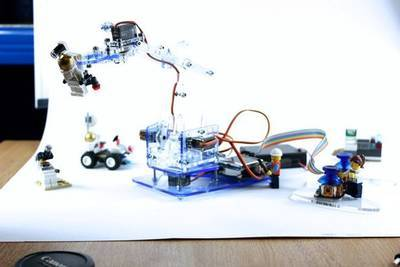
MeArm V1.1 - Tiny Open Source Robot Arm
"MeArm is a tiny robot arm that came to Instructables in 2014. Build instructions, cutting files and code for Arduino and Raspberry Pi are shared here, as ever, under a CC-BY-SA licence. Which means please use it, share it and love it but let people know where you got it from. The creators are now Mime Industries, a collaboration of MeArm and Mirobot. Prizes* for those who can tell how we came up with the name! The MeArm is made up of a structure of acrylic (or wood, mdf or polycarbonate), a bunch of machine screws and nuts, servo motors (to make it move) and a controller (to make the servo motors move). The servo motors and the controller are important to set up before you start the physical build, that way you'll only have to build it once." [...]
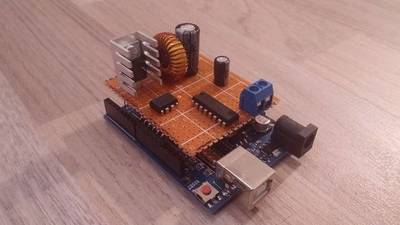
Arduino-controlled True Switching Regulators
"n this Instructable, I will show my Arduino-controlled buck/boost/inverter converter. And what means that "true" in the title, you ask? Well, you have probably already seen a tutorial where somebody just connected a transistor to the PWM output of an Arduino along with a few other parts and called that a buck/boost/inverter converter (for example here). I admit it, I also used it once in my AVR Universal Charger. It works OK when your load is not changing, but if your load rapidly changes, the controller can't react fast enough and this can lead to a very dangerous over-/under-voltage. So generally this is a very bad idea. A much better way is to use a chip designed exactly for this purpose. Here, we will use TL494 from Texas Instruments. You can find this chip in most computer power supplies or even classical converters. But did you know that we can control the output of the chip from an Arduino? Basically our Arduino will tell the chip what output voltage and max current we want and the chip will do all the hard work, so we do not have to care about Arduino latency. Also, because this chip is analog (compared to digital Arduino), it is superior as far as accuracy goes." [...]
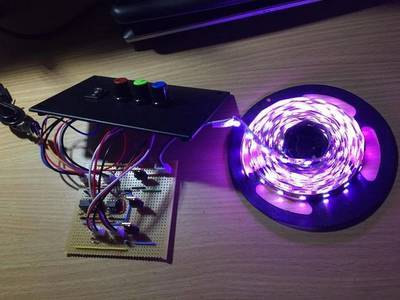
RGB LED Strip Dimmer with 555 Timer
"In this Instructable, I'll be showing you how to make a cool RGB LED strip dimmer using a few potentiometers and a couple of 555 timers. I'm currently working on a larger project which involves using this circuit, but I thought it would be good to share this circuit since it's really cool to play with just by itself. The larger project I'm working on is comprised of two circuits: the RGB dimmer and a colour organ which makes the LEDs dance to the music when an audio source is plugged into the circuit. I was inspired to work on this project after posting this Instructable here which used a single colour LED strip with a dimmer and an audio pulsing circuit. After posting this, I received many comments and messages requesting to work on an RGB version of the circuit, so here is part of it, with the rest to follow very shortly." [...]
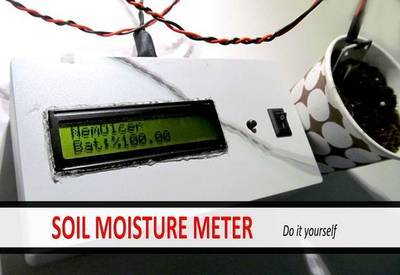
Make a Soil Moisture Meter With the Help of Arduino
"I am an academician in Faculty of Agriculture. We have a lot of experiments in field and measure some parameters that are constraint to do. One of the compulsory measurement is determining of soil moisture. Estimation of soil moisture as using soil sampler is more accurate measurement, but need to so much labor and time. So I decided to make a soil moisture meter with the aid of arduino and soil moisture sensor. I hope it will be useful for you." [...]
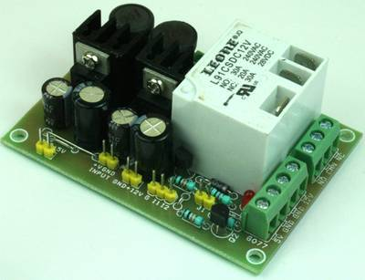
Large Current Relay with Dual Output DC-DC Converter for Hobby CNC/Router
"Single Channel Large current relay board with dual DC-DC converter board is mainly designed for Hobby CNC, Routers, and Plasma cutters. Hobby CNC controller requires multiple DC outputs to drive various things. This board provides 5V DC and 12V DC 1Amp each. The dual supply helps driving LPT breakout board, Sensors, Limit switches and few other things that require 5V and 12V. The Relay has large current handle capacity and can be used to drive spindles, solenoids, and other things that require switching. The relay requires TTL High signal to trigger or it has the capability to even trigger with GND signal." [...]
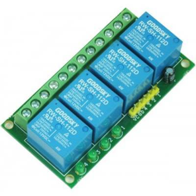
4 Channel Relay Board
"4 Channel Relay Board is a simple and convenient way to interface 4 relays for switching application in your project. Very compact design that can fit in small area, mainly this board is made for low voltage applications." [...]
Drawing Simple Graphics on a RGB LED Matrix Panel with a Raspberry Pi and GeeXLab
"In previous articles (HERE and HERE), we have talked about the RGB LED matrix panel as well as the RGB Matrix HAT which is the hardware interface between the LED panel and the Raspberry Pi. Today we will cover how to draw simple graphics on the LED panel. Once the RGB Matrix HAT is connected to the Raspberry Pi and to the RGB LED matrix panel, you can start your Raspberry Pi and play with GeeXLab. From version 0.13, GeeXLab comes with built-in functions in Lua and Python to drive RGB LED matrix panels. For this article, I use Raspbian Jessie with Pixel desktop as well as GeeXLab 0.13.0 with OpenGL 2.1 support for Raspberry Pi (you can download this version from THIS PAGE). There is a second version of GeeXLab with OpenGL ES support but I prefer the OpenGL 2.1 version of GeeXLab because 3D accelerated windows are supported using X11/GLX." [...]
That's all Folks!